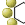

|
|
Phase — Build QSAR Model Step |
In this step, you build QSAR models for the selected hypotheses, using the activity data for the ligands that match the hypotheses. You can choose different training sets and test sets, and visualize the model results. The models are built by a partial least squares (PLS) regression, in which progressively more PLS factors are included in the model. When you have built the models, you can use them to visualize parts of the ligands that contribute positively or negatively to activity, and to predict activities of matches to the hypotheses. The model is stored in the run, and can be used to predict activities during a database search. When you have completed this step, you can export the hypotheses used to build the models to an external file for use with other projects, and you can continue directly to a search for matches to the hypothesis.
The main tasks in this step are to build a set of QSAR models for each hypothesis selected in the Score Hypotheses step and use them to visualize parts of the ligands that contribute positively or negatively to activity. The models are stored in the run, and can be used to predict activities during a search for matches.
Note: To make hypotheses with their QSAR models available in the Advanced Pharmacophore Screening panel, you must either export them, or select them and click Search for Matches.
The first task in this step is to choose a training set and a test set, and exclude ligands that you do not want in either set. Initially, all ligands are selected for the training set. You can change the status of a ligand by clicking in the QSAR Set column for the ligand in the Alignments table. The status cycles between training, test, and blank, which means that the ligand is excluded from both sets. You can change the status of all selected ligands by control-clicking in the QSAR Set column for one of the ligands. It does not matter which set of alignments is displayed in the Alignments table: all ligands are listed, and the choice of QSAR sets applies to all hypotheses.
You can select a random fraction of the included ligands for the training set by entering a percentage in the Random training set text box and clicking Apply. The specified percentage of ligands is selected at random from the existing training and test sets and assigned to the training set. The remainder are assigned to the test set. The seed for the random selection can be set in the Build QSAR Model — Options dialog box.
Phase offers two types of QSAR model: an atom-based model and a pharmacophore-based model. The selection of the model can be done in the Build QSAR Model — Options dialog box, which you open by clicking Options.
To choose which kind of model you want to build, select Atom-based or Pharmacophore-based under Model type. The default model is an atom-based model.
The atom-based model uses a van der Waals model of atoms, and divides them into six classes as follows:
The atom-based model therefore treats the entire molecule. It is useful when features other than the pharmacophores are important to activity, such as steric clashes. However, its performance generally decreases as the diversity of the training set increases.
The pharmacophore-based model uses pharmacophore features with a specified radius as the basis of the model. Only the pharmacophore features that are present in the hypothesis are used in the QSAR model. To specify the radii of the pharmacophore features, edit the values in the Tolerance column.
The pharmacophore-based model assumes that the activity is explained entirely by the pharmacophore model itself, and therefore cannot predict activities where other features are important to activity, such as steric clashes.
Options for the QSAR model are specified in the Build QSAR Model — Options dialog box, which you open by clicking Options.
The QSAR model partitions the space occupied by the ligands into a cubic grid. Any atom or feature can occupy part of one or more cubes. A cube is occupied by an atom or a feature if the centroid of the cube is within the van der Waals radius of the atom or the radius of the feature. You can set the size of the cubes by changing the value in the Grid spacing text box, and view the grid by clicking Preview.
The occupancies of the cubes by different classes of atoms or different features are used as variables in the partial least squares regression. The regression is done by constructing a series of models with an increasing number of partial least squares (PLS) factors. The accuracy of the models increases with increasing PLS factors until over-fitting starts to occur. The default number of PLS factors is N/5, where N is the number of ligands. You can adjust this to a lower value in the Maximum PLS factors text box.
If you have more than one PLS factor, you should examine the models produced to select the best model. For example, you can examine the predicted activities for the test set, and see at what point they begin to degrade, or you can compare the the training set errors with the experimental uncertainty in the data.
You can also visualize the QSAR model in the Workspace, and break it down into its components for each atom or feature type. To visualize the model, click the View QSAR model button on the toolbar, or choose QSAR Model from the Display menu. The cubes that represent the model are displayed in the Workspace, colored according to the sign of their coefficient values.
To adjust the display appearance and to select features for display, click QSAR Visualization Settings. The QSAR Visualization Settings panel is displayed. In this panel you can choose to view volumes for the QSAR models or for the ligands, view volumes for each atom class or feature separately or for all atom classes or features, change the number of PLS factors to view the different models, adjust thresholds for display of coefficients and adjust the transparency of the cubes.
The visualization tools allow you to identify features of ligand structures that are likely to contribute to higher or lower activity. For example, if you select Workspace ligands under View volume occupied by and choose an atom type from the Selected atom class list in the QSAR Visualization Settings panel, you can include the ligands in the Workspace one by one and see which parts of all ligands have a positive or a negative contribution to the activity due to the chosen atom type. This might give some clues to what functional groups are desirable or undesirable at certain positions in a molecule.
You can also view the hypothesis, including distances and angles between features, and excluded volumes, using the toolbar buttons.
The toolbar buttons, which allow you to view the hypothesis and the QSAR model, are active in this step.
 |
View Hypothesis Displays the selected hypothesis in the Workspace, as a spatial arrangement of feature symbols. For a description of these symbols, see the Phase — Create Sites Step topic. |
|  | View Excluded Volumes Displays excluded volumes for the selected hypothesis in the Workspace. |
| View QSAR model Displays the selected QSAR model for the hypothesis. Only available in Step 5. |
|
 |
View Site Measurements Display markers for the distances and angles in the selected hypothesis. Opens the View Site Measurements panel, in which you can select the distances and angles to be displayed. |
The model-building buttons allow you to set options for the models, build the models, and visualize the models in the Workspace.
Builds the QSAR models for all hypotheses. The predicted activities are displayed in the Alignments table, and parameters for the quality of the fit are displayed in the QSAR Results table.
Opens the Build QSAR Model — Options dialog box, in which you can select a random seed for the training set, set the size of the grid for the QSAR model, the number of partial least squares (PLS) factors, and select the model type (atom-based or pharmacophore-based).
Opens the QSAR Visualization Settings panel, in which you can set parameters to control the display of the QSAR model in the Workspace.
This table displays the scoring results for the hypotheses that were carried forward to this step. The table has the same columns as in the Score Hypotheses step.
The QSAR Results table shows the statistics of the fit for the training set and the test set. Each row presents the results for a hypothesis. Within each row are lines for regression models with a particular number of partial least squares factors included. The QSAR Results table has the following columns:
| In | Workspace inclusion status of the hypothesis. You can only display a single hypothesis at a time, by clicking the diamond in this column. If you select hypotheses that do not include the displayed hypothesis, the hypothesis is undisplayed and the diamond is cleared. If you click this column for a hypothesis, the hypothesis is also selected. | |
| ID | Hypothesis ID, which consists of the variant name and an index. | |
| # Factors | Number of factors in the partial least squares regression model. | |
| SD | Standard deviation of the regression | |
| R-squared | Value of R2 for the regression. | |
| F | Variance ratio. Large values of F indicate a more statistically significant regression | |
| P | Significance level of variance ratio. Smaller values indicate a greater degree of confidence. | |
| RMSE | Root-mean-square error of the test set. | |
| Q-squared | Value of Q2 for the predicted activities of the test set. | |
| Pearson-R | Value of Pearson-R for the predicted activities of the test set. |
These buttons perform various actions on the hypotheses in the table.
Adds the selected hypotheses to the Project Table. These hypotheses also appear in the Manage Hypotheses panel. When the hypotheses are added, they are selected, and the first hypothesis is included in the Workspace.
Opens a file selector so that you can save the selected hypotheses to disk. Hypotheses are stored in the run as part of the project, so they can always be used inside the project. This facility provides a way of using hypotheses from a project to search a database without having the project open.
Opens the Excluded Volumes dialog box, in which you can define volumes that should be excluded when searching for matches to the selected hypothesis. These excluded volumes become part of the hypothesis. If a ligand has atoms in any excluded volume, it is not considered to be a match. This button is not available if multiple hypotheses are selected.
Delete the selected hypotheses.
There are two options for the display of ligands in the Workspace:
Keep ligands in Workspace—When you select this option, the ligands that are currently included in the Workspace are kept in the Workspace when you change the hypothesis that is displayed. You can include or exclude ligands, and the new list is used when you change the hypothesis. The exception is that, if any included ligand is not aligned in the new hypothesis, it is not displayed.
Include reference ligand—When you select this option, the reference ligand is included in the Workspace when you include the hypothesis in the Workspace.
This table contains the list of aligned ligands for the selected hypothesis. When the step is entered, all ligands are selected and included in the training set, and the predicted activity column is empty. These columns are added after the QSAR model is built.
Most of the columns of this table are noneditable. You can change the activity values, select the training and test sets, and display the ligands in the Workspace. You can sort the table by the values in a column, by clicking the column heading.
The table has a shortcut menu for exporting information from the table, with the following items:
Export Table Data—Export the data in the table to a CSV file or an HTML table. Submenu with items for the format.
Add Alignments to Project Table —Add the aligned ligands to the Project Table. The activities and the QSAR set membership are added as properties.
Export Alignments to File—Export the aligned ligands to a Maestro file. The activities and the QSAR set membership are added as properties.
The table columns are described below.
| In | Inclusion status of the ligand. The diamond has a cross in it if the ligand
is included in the Workspace, and is empty if the ligand is excluded. You can
include and exclude ligands with click, shift-click and control-click. You can also display feedback information in the Workspace when you include a single ligand. This information can include data from the table. The setting and choice of properties is made in the Phase Workspace Feedback dialog box, which you open by choosing Display → Workspace Feedback. |
|
| Ligand Name | The name of the ligand. | |
| QSAR Set | Indicates whether a ligand is in the training set, the test set, or neither (the ligand is ignored). The column is blank if the ligand is ignored. Click the column repeatedly to cycle the ligand through the three possible states. Control-click to cycle the selected ligands through the three states. The state for the selected ligands is set to the state for the row that is clicked. | |
| Activity | The ligand's activity. You can alter the activity values by directly editing the table cells. | |
| # Factors | Number of factors in the partial least squares regression model. | |
| Predicted Activity | Activity predicted by the QSAR model. The number of columns is equal to the maximum number of PLS factors specified in the Build QSAR Model — Options dialog box. Each column contains the prediction from a model containing the number of PLS factors indicated in the column heading. | |
| Pharm Set | Indicates whether a ligand is in the set of actives used to develop the hypothesis. | |
| Fitness | Fitness score from the scoring step. |
This option colors each of the rows in the Alignments table a unique color, and colors the ligand for each row with the same color when it is displayed in the Workspace. This feature helps you to identify the ligands when they are displayed.
These controls allow you to randomly select the training set.
Specify the percentage of ligands to include in the training set by random selection from the ligands in the union of the training set and the test set.
Click to apply a random selection of the training set from the ligands that are in the union of the training set and the test set. The ligands that are not selected are assigned to the test set. Repeated clicks choose different sets.
This button allows you to create a scatter plot of experimental vs. predicted activities. Clicking the button opens the Phase QSAR - Scatter Plot dialog box, in which you can enter the number of PLS factors; choose whether to plot activities for all ligands, the selected ligands, the training set, or the test set; and draw a 45 degree line (the line of perfect fit). Once you have made settings, clicking Plot in the dialog box opens a the Plot XY panel, in which the plot is displayed along with the R^2 value for the fit.
You can create multiple plots with different choices from the same hypothesis, or with different hypotheses, by clicking Plot XY again. To display more than one plot at a time, use the tools in the Scatter Plot panel.
This button opens the Advanced Pharmacophore Screening panel, in which you can start a search for ligands that match a hypothesis. The hypotheses that were selected in the Hypotheses table in this step are listed in the Available Hypotheses table of the Advanced Pharmacophore Screening panel, and the first of these hypotheses is selected.
|